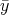
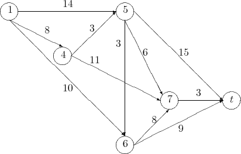
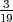
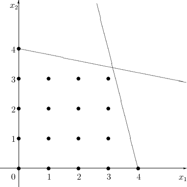

Third Exam, Friday, December 5, 2008.
You may use any result from your notes or a homework that is clearly stated. You may use one sheet of handwritten notes, but no other sources. The exam consists of five questions, and lasts one hundred and ten minutes.
A pharmaceutical manufacturer must supply 30 batches of its new medication in the next quarter, then 25, 10, and 35 in successive quarters. Each quarter in which the company makes product requires $100,000 setup, plus $3000 per batch produced. There is no limit on production capacity. Batches can be held in inventory, but the cost is a high $5000 per batch per quarter. The company seeks a minimum total cost production plan.
This problem can be approached by dynamic programming, with states k = 1,…, 5 representing the reaching of quarter k with all earlier demand fulfilled and no inventory on hand.
Sketch the digraph corresponding to the dynamic program structure. Include costs on all arcs.
Explain why the feasible production plans correspond exactly to the paths from node k = 1 to node k = 5 in your digraph.
Solving the linear programming relaxation of a certain integer program results in the following optimal tableau:
We decide to solve this problem using branch-and-bound and we branch first on x2.
Consider the primal-dual pair of linear programs
where x, s, and c are n-vectors, b and y are m-vectors, and A is an m × n matrix of rank m.
Assume > 0 is feasible in (P) and ( , ) is feasible in (D) with > 0. Given a diagonal scaling matrix X with positive diagonal entries, the affine scaling direction requires calculating the projection of Xc onto the nullspace of AX. Let PAX denote the projection matrix and let d denote this projection, so d = PAXXc.
Show that d = PAXX .
Use dynamic programming to find the longest path from vertex 1 to vertex t in the following graph, where the edge lengths are given on the graph:

(Hint: If the vertices are ordered 1 - 4 - 5 - 6 - 7 - t then every arc is directed from an earlier vertex to a later vertex. It follows that we can find the longest path to each vertex in succession.)
Consider the integer program
The optimal solution to the linear programming relaxation of this problem is = (3, 3). The problem is illustrated here:

Solve this problem using branch-and-bound. (Note: It is acceptable to solve the LP relaxations graphically.)
The point x = (1, 2, 3, 1) is an interior feasible point to the linear program
The barrier problem for this linear program for a positive choice of μ is
Show that x = (1, 2, 3, 1) solves the barrier problem when μ = 6. (Hint: the dual problem to min{cT x : Ax = b,x ≥ 0} is max{bT y : AT y ≤ c}.)